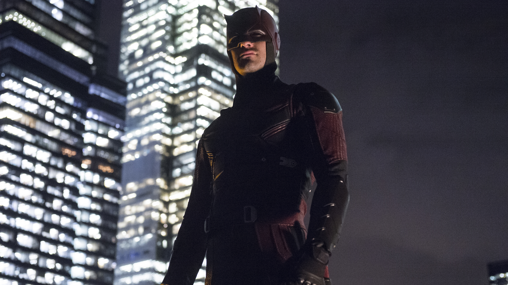
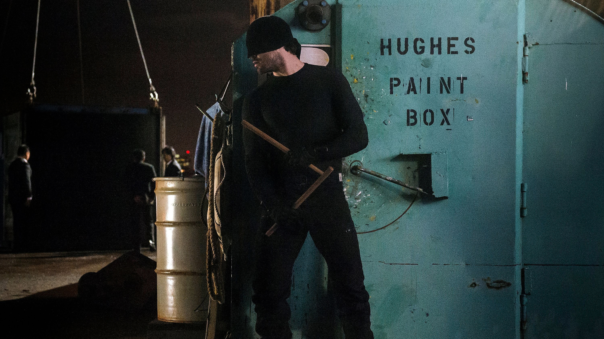
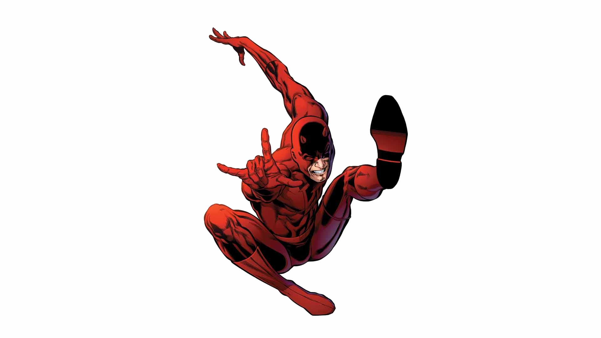

Demolidor
Não busco perdão pelo que fiz. Peço perdão pelo que vou fazer.
Quem é Matt Murdock?
Advogado que, após ficar cego em um acidente que ampliou de forma sobre-humana os seus outros sentidos, defende a lei nos tribunais de dia e pune os criminosos de Hell's Kitchen à noite, lutando por justiça como o Homem Sem Medo.



Nelson & Murdock: Advogados na Lei
N&MA justiça tem um preço, mas a nossa consulta é gratuita.